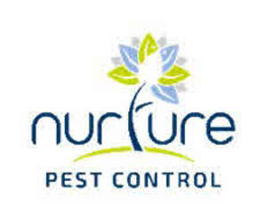
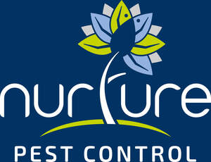
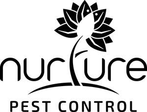
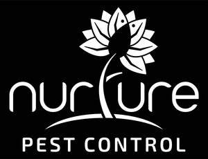

Trade Mark Journal No.2025/040 3 October 2025
UK00004251518 19 August 2025 (3,6,22,35,37)
Mark 1

Mark 2

Mark 3

Mark 4

- Class 3
- Cleaning, polishing and abrasive preparations; Mould removing preparations; Cleaning preparations; Cleaning preparations for use in removing animal, pest and vermin droppings.
- Class 6
- Common metals and their alloys, ores; Metal materials for building and construction; Transportable buildings of metal; Non-electric cables and wires of common metal; Small items of metal hardware; Metal containers for storage or transport; Safes; Wind driven bird repellent devices made of metal; Bird spikes of metal; Metal wire frames for protection of solar panels and chimneys from birds and other pests; Parts and fittings for the aforementioned goods.
- Class 22
- Ropes and string; Nets; Tents and tarpaulins; Awnings of textile or synthetic materials; Sails; Sacks for the transport and storage of materials in bulk; Padding, cushioning and stuffing materials, except of paper, cardboard, rubber or plastics; Raw fibrous textile materials and substitutes therefor; Nets for protective use in gardening; Nets (twine for -); Netting for protection against birds and insects; Rockfall prevention nets of textile; Rockfall prevention nets, not of metal; Snare nets.
- Class 35
- Advertising, marketing and promotional services; Business management, organization and administration; Office functions; Loyalty, incentive and bonus program services; Provision and rental of advertising space and media; Business assistance, business management and business administrative services; Data processing, systematisation and management; Business analysis and information services; Business management, business assistance, advertising, business consultancy for facility management and grounds maintenance; Business organisation and operation consultancy; Retail services, online retail services, wholesale services and online wholesale services in relation to gardening articles, gardening products, landscaping articles, landscaping products, pest control products, pest control articles, pest control preparations, cleaning preparations, mould removing preparations; Advisory, consultancy and information services relating to all of the aforementioned services.
- Class 37
- Building, construction and demolition services; Installation and repair of landscaping; Building maintenance; Building repair; Interior and exterior cleaning of buildings; Maintenance and repair of building contents; Maintenance and repair of office buildings; Maintenance and repair of residential buildings; Maintenance and repair of commercial buildings; Cleaning services; Concrete repairs; Fence erection services; Glazing, Installation, maintenance and repair of glass, windows and blinds; Heating, ventilation and air-conditioning installation, maintenance and repair; Clearing and cleaning gutters; Plumbing installation, maintenance and repair; Lift and elevator installation, maintenance and repair; Extermination of pests; Pest control; Cleaning equipment hire; Rental of tools, plant and equipment for construction, demolition, cleaning and maintenance; Carpentry services; Civil engineering construction, repairs and maintenance; Clearing of tree-roots; Hire of tree pullers; Painting and decorating services; Pest control services; Extermination, disinfection and pest control; Pest control services, other than for agriculture, aquaculture, horticulture and forestry; Proofing of buildings, premises, homes and structures against pest and vermin access; Vermin exterminating, other than for agriculture, aquaculture, horticulture and forestry; Fumigation of buildings, premises, homes and structures against pest and vermin activity; Installation of pest control apparatus; Snow removal; Snow removal services; Salt spreading services to prevent and melt ice and snow; Grit spreading services to prevent and melt ice and snow; Installation and maintenance of irrigation systems; Installation and maintenance of interior and exterior displays, furniture and shelving for plants and flowers; Advisory, consultancy and information services relating to all of the aforementioned services.
NURTURE PEST SERVICES LIMITED
Representative: Cameron Intellectual Property Ltd